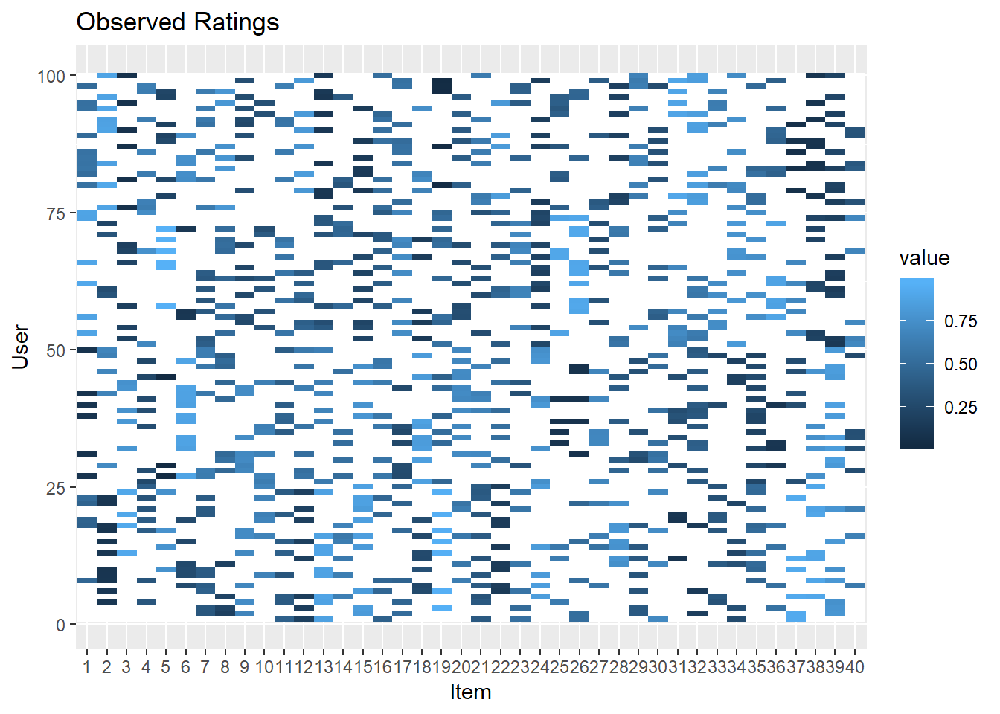
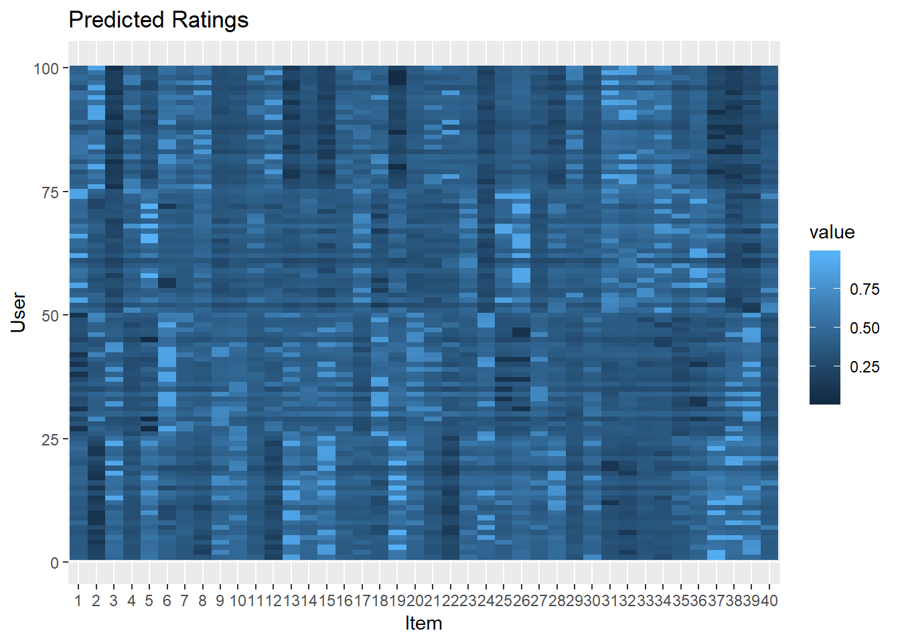
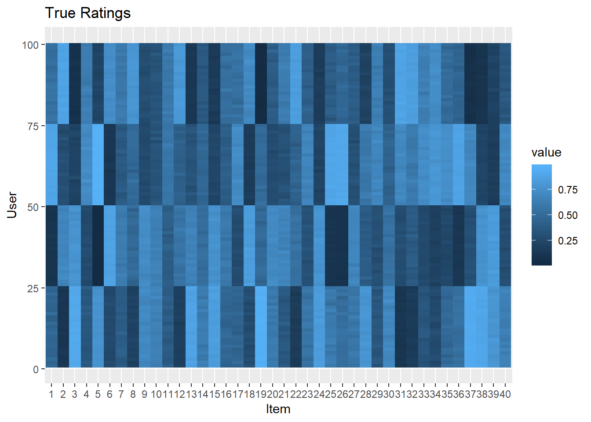
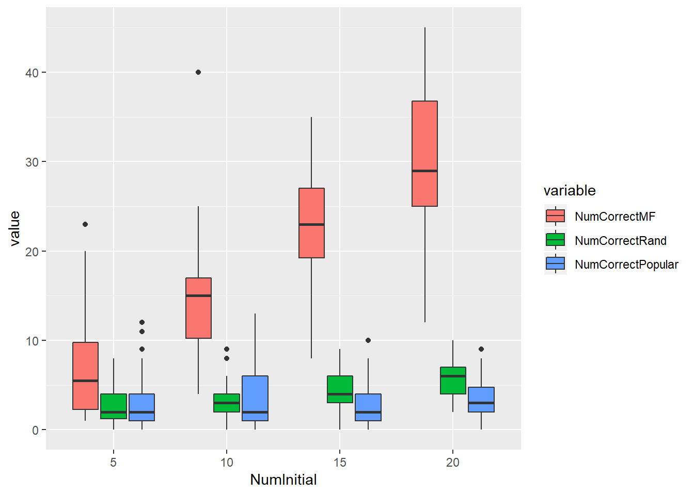
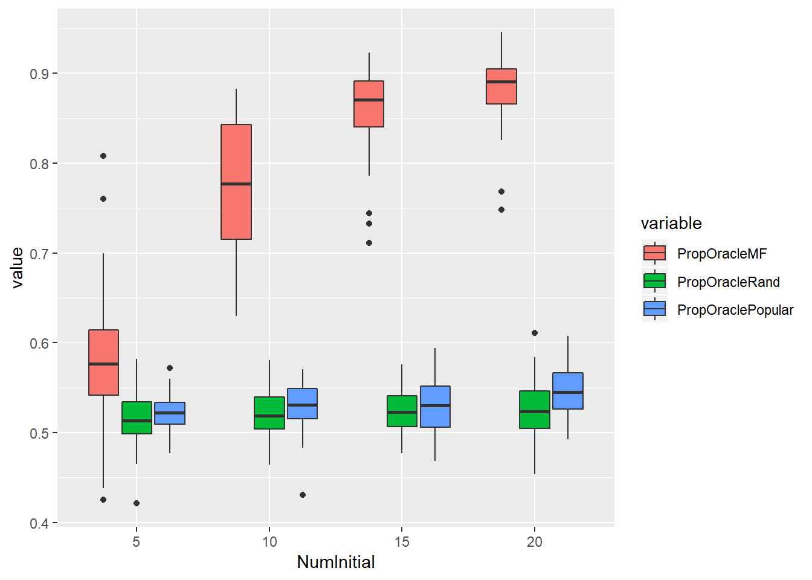

Investigating a small-scale Recommender Systems for Stories
James A. Grant
1. Set-up
We want to test how well a recommender system can detect some structure in the ratings of a population - i.e. how it can pick up similarities and patterns in the preferences of users. To assess this we will build a simple dataset that we know has some such structure in it, and therefore something that we may expect a reasonable method to be able to predict. We first set a number of items, \(I\), and a number of users, \(U\), and decide how many items each user will have rated. The more items have been rated, the easier the unobserved ratings should be to infer. In this particular example we suppose that each item is a story that can be recommended to a user, although the techniques we are using can be used across many applications.
n.items <- 40 # Number of items
n.users <- 100 # Number of users
n.initial <- 10 # Number of initial ratings (less than n.items)Each user \(u\) assigns a rating \(R_{ui}\) to each item \(i\). The higher the rating, the more the user “likes” the item. We assume that ratings are generated from a linear model based on attributes of the users, and of the items.
In particular, we assume that a user \(u\) has two relevant binary attributes \(\beta_{u,1},\beta_{u,2}\) which each are coded as 1 or -1. These could be things like whether they are over/under 25 years of age or their sex.
Each item has two relevant attributes \(\gamma_{i,1}, \gamma_{i,2}\) which take continuous values. These could be measures of things like how well a story captures the experiences of a particular sex or how relevant it is to younger people versus older people.
We then assume that the ratings are normally distributed: \[R_{ui} \sim N(\beta_{u,1}\gamma_{i,1}+\beta_{u,2}\gamma_{i,2},\sigma^2)\] for some variance parameter \(\sigma^2\). We finally apply a transformation to these random values to get ratings on the [0,1] scale.
The code below generates a set of ratings, based on equal representation of users across four groups (based on their \(\beta\) covariates).
# Create users from four populations (AA, AB, BA, BB)
user.covariates <- matrix(c(rep(1,n.users/2),rep(-1,n.users/2),
rep(1,n.users/4),rep(-1,n.users/4),
rep(1,n.users/4),rep(-1,n.users/4)),
ncol=2,byrow=F)
# Create items with two numeric characteristics
item.covariates <- matrix(c(rnorm(2*n.items,0,1)),ncol=2,byrow=F)
sig <- 0.1 # Ratings variance
# Generate Gaussian ratings
true.ratings <- matrix(nrow=n.users,ncol=n.items)
for (i in 1:n.users){
for (j in 1:n.items){
true.ratings[i,j] <- rnorm(1,t(item.covariates[j,])%*%user.covariates[i,],
sig)
}
}
# Transform to [0,1] scale
true.ratings <- apply(true.ratings,2,sigmoid)We plot these ratings below in a heatmap - here lighter colours represent higher ratings. Items are on the horizontal axis and users are on the vertical axis. The similarities within the groups, and the differences across them are quite clear. For the rest of this example, these ratings will be treated as ground truth, and we assume that if a user is recommended an item, they faithfully report their true rating of the item. Our objective is to recommend items to users that have high ratings.
ggplot(data = yy, aes(y=rowname, x=variable, fill=value)) +
geom_tile() +labs(x="Item",y="User",title="True Ratings") 
We want to design a system that can suggest stories to people based on a small number of ratings they provide. We suppose that each user has been asked to provide their rating for 10 items (chosen at random) giving us the following data - a subset of the full dataset, which recommender systems will not have access to.
# Subsample to get Observed data
obs.ind <- matrix(0L,nrow=n.users,ncol=n.initial)
for (i in 1:n.users){
obs.ind[i,] <- sample(n.items,n.initial)
}
obs.ratings <- matrix(0L,nrow=n.users,ncol=n.items)
for(i in 1:n.users){
for (k in 1:n.initial){
obs.ratings[i,obs.ind[i,k]]<-true.ratings[i,obs.ind[i,k]]
}
}
# Put NAs in for missing data and tidy for plotting
obs.ratings2 <- matrix(nrow=n.users,ncol=n.items)
for(i in 1:n.users){
for (k in 1:n.initial){
obs.ratings2[i,obs.ind[i,k]]<-true.ratings[i,obs.ind[i,k]]
}
}
yy <- as.data.frame(obs.ratings2)
names(yy) <- c(1:n.items)
yy$rowname <- c(1:n.users)
yy <- melt(yy,id="rowname")
# Visualise observed data
ggplot(data = yy, aes(y=rowname, x=variable, fill=value)) +
geom_tile() +scale_fill_continuous(na.value="white") +
labs(x="Item",y="User",title="Observed Ratings") 
2. Recommender Model + Predictions
We process our data in to a suitable format and then run it through a standard “matrix factorization” algorithm. This approach considers the similarities between the responses of different users and the responses for different items and makes predictions of the unobserved ratings. It does not receive any information on the covariates of users and items - only the rating data.
#Convert to form required for recommender
## Should be able to do this more efficiently with Matrix package.
# Observed Data
obs.list <- numeric(3)
for(i in 1:n.users){
for(j in 1:n.items){
if(obs.ratings[i,j]!=0){
obs.list <- rbind(obs.list,c(i,j,obs.ratings[i,j]))
}
}
}
obs.list <- obs.list[-1,]
obs.list <- data_memory(obs.list[,1],obs.list[,2],obs.list[,3])
#Unobserved Data
unobs.list <- numeric(3)
for(i in 1:n.users){
for(j in 1:n.items){
if(obs.ratings[i,j]==0){
unobs.list <- rbind(unobs.list,c(i,j,0))
}
}
}
unobs.list <- unobs.list[-1,]
unobs.list2 <- data_memory(unobs.list[,1],unobs.list[,2],unobs.list[,3])
# Fit the matrix factorization model
model <- Reco() # Initialise the model
model$train(obs.list) # Train the model on observed data
pred_file <- tempfile() # Make predictions
predictions <- model$predict(unobs.list2, out_memory())
unobs.list[,3] <- predictions # Associate with unobserved pairs
# Generate matrix of predicted values
pred.ratings <- obs.ratings
for(l in 1:nrow(unobs.list)){
pred.ratings[unobs.list[l,1],unobs.list[l,2]] <- unobs.list[l,3]
}The predictions of the matrix factorization model are shown below, alongside the true ratings matrix. We can see that the model’s predictions are quite inaccurate. It seems not to have enough data to make strong predictions about most unknown values and chooses values around the mean ratings for most user and item pairs. Later, we will explore how this varies with changing amounts of initial data.
#Visualise Predictions
ggplot(data = xx, aes(y=rowname, x=variable, fill=value)) +
geom_tile() +labs(x="Item",y="User",title="Predicted Ratings") 
ggplot(data = yy, aes(y=rowname, x=variable, fill=value)) +
geom_tile() +labs(x="Item",y="User",title="True Ratings") 
3. Evaluation
There are several ways to numerically evaluate the results. We may consider the root mean squared error (RMSE) of all the predictions:
# Prediction accuracy - RMSE
rmse(as.numeric(pred.ratings),as.numeric(true.ratings))## [1] 0.205878We could then compare this against the predictions from different models. Alternatively, we can look at the quality of the recommendations made by the model, which is arguably more important than its overall fit.
Below, we consider recommending one item to each user. We choose the item with the highest predicted rating, amongst those that they have not previously rated for each user. We then calculate the number of times that this recommendation is the item that they truly would have rated highest (among those their rating hasn’t been revealed for) and the propotion of the total available rating score that is achieved by the recommendations made.
# Recommendation accuracy
pred.top1 <- numeric(n.users)
val.pred.top1 <- numeric(n.users)
for(i in 1:n.users){
pred.top1[i] <- which.max((pred.ratings-obs.ratings)[i,])
val.pred.top1[i] <- true.ratings[i,pred.top1[i]]
}
true.top1 <- numeric(n.users)
val.true.top1 <- numeric(n.users)
for(i in 1:n.users){
true.top1[i] <- which.max((true.ratings-obs.ratings)[i,])
val.true.top1[i] <- true.ratings[i,true.top1[i]]
}
# Recommendation accuracy - Number of spot on recommendations
sum(pred.top1==true.top1)## [1] 31# Recommendation accuracy - Percentage of available rating score
sum(val.pred.top1)/sum(val.true.top1)## [1] 0.930521We can compare these accuracy scores, against those for random recommendations, or recommending every user the most popular items that they haven’t themselves rated.
random.rec <- numeric(n.users)
val.random.rec <- numeric(n.users)
for(i in 1:n.users){
random.rec[i] <- sample(c(1:n.items)[-obs.ind[i,]],1)
val.random.rec[i] <- true.ratings[i,random.rec[i]]
}
sum(random.rec==true.top1)## [1] 2sum(val.random.rec)/sum(val.true.top1)## [1] 0.574682ave.obs.rate <- numeric(n.items)
for(j in 1:n.items){
ave.obs.rate[j] <- mean(obs.ratings[,j][obs.ratings[,j]!=0])
}
ave.obs.rate <- rbind(ave.obs.rate,c(1:n.items))
ave.obs.rate <- ave.obs.rate[,order(ave.obs.rate[1,])]
popular.rec <- numeric(n.users)
val.popular.rec <- numeric(n.users)
for(i in 1:n.users){
j <- n.items
while(j %in% obs.ind[i,]){
j<-j-1
}
popular.rec[i] <- ave.obs.rate[2,j]
val.popular.rec[i] <- true.ratings[i,popular.rec[i]]
}
sum(popular.rec==true.top1)## [1] 1sum(val.popular.rec)/sum(val.true.top1)## [1] 0.48573494. Evaluation over many repetitions
This is only a single sample’s results, we want to repeat this many times (and with different parameters) to get an idea of average performance, and how it is affected by the variability in the data/amount of observed data.
We define a function which can be used to repeat these analyses, and implement it repeatedly for various parameter values.
We can then plot the distribution of the number of correct guesses for different numbers of initial ratings.
recdata.melt <- melt(recdata,id.vars=c("NumUsers","NumItems","NumInitial","ID"),measure.vars=c("RMSEMF",'NumCorrectMF','PropOracleMF',"NumCorrectRand", "PropOracleRand","NumCorrectPopular", "PropOraclePopular"))
recdata.melt$NumInitial <- as.factor(recdata.melt$NumInitial)
ggplot(recdata.melt[recdata.melt$variable%in%c("NumCorrectMF","NumCorrectPopular","NumCorrectRand"),]) +
geom_boxplot(aes(x=NumInitial, y=value,fill=variable))
ggplot(recdata.melt[recdata.melt$variable%in%c("PropOracleMF","PropOraclePopular","PropOracleRand"),]) +
geom_boxplot(aes(x=NumInitial, y=value,fill=variable))